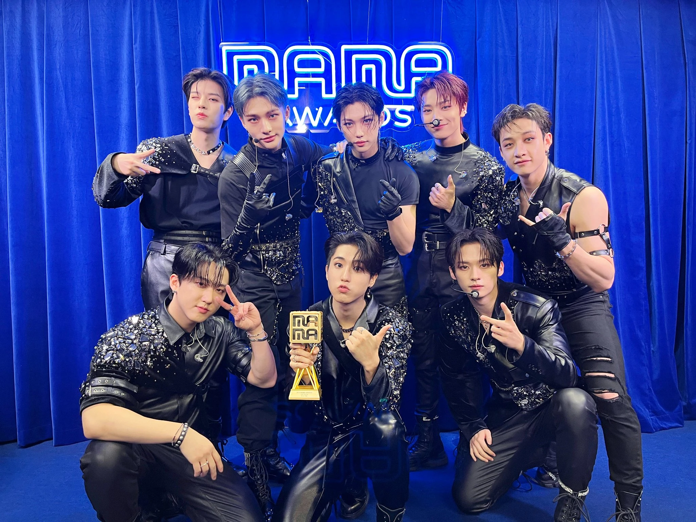

Stray Kids no The Fact Music Awards em Abril de 2019

Stray Kids com seu troféu no MAMA Awards 2022
Grand prizes (Daesang)
| Ano | Cerimônia | Categoria | Destinatário |
|---|---|---|---|
| 2021 | Prêmios de Artistas da Ásia | Performance do Ano | "Thunderous" |
| 2022 | Prêmios de Artistas da Ásia | Álbum do Ano | "MAXIDENT" |
| 2023 | Prêmios de Música Hanteo | Melhor Performance | Stray Kids |
| 2023 | Prêmios de Artistas da Ásia | Palco do Ano | Stray Kids |
| 2024 | Prêmios de Música Hanteo | Melhor Performance | Stray Kids |
| 2024 | Prêmios de Entretenimento da Ásia | Grande Prêmio | Stray Kids |
Cerimônias Coreanas
Golden Disc Awards (GDA)
| Ano | Categoria | Destinatário |
|---|---|---|
| 2019 | Melhor Novo Artista | Stray Kids |
| 2021 | Melhor Performance | Stray Kids |
| 2022 | Melhor Álbum (Bonsang) | "NOEASY" |
| 2023 | Melhor Álbum (Bonsang) | "MAXIDENT" |
| 2023 | Artista Mais Popular | Stray Kids |
| 2024 | Melhor Álbum (Bonsang) | ★★★★★ (5-STAR) |
| 2024 | Artista Global de K-pop | Stray Kids |
Seoul Music Awards (SMA)
| Ano | Categoria | Destinatário |
|---|---|---|
| 2019 | Revelação do Ano | Stray Kids |
| 2021 | Prêmio Principal (Bonsang) | Stray Kids |
| 2022 | Prêmio Principal (Bonsang) | Stray Kids |
| 2023 | Prêmio Principal (Bonsang) | Stray Kids |
| 2024 | Prêmio Principal (Bonsang) | Stray Kids |
Circle Chart Music Awards (CCMA)
Anteriormente conhecido como Gaon Chart Music Awards (GCMA) até 2022.
| Ano | Categoria | Destinatário |
|---|---|---|
| 2019 | Artista Revelação do Ano (Álbum) | Stray Kids |
| 2020 | Estreante Mundial do Ano | Stray Kids |
| 2021 | Performance Destaque do Ano | Stray Kids |
| 2022 | Estrela Mundial de K-pop do Ano | Stray Kids |
| 2023 | Artista do Ano – Álbum Físico (4º Trimestre) | "MAXIDENT" |
| 2024 | Artista do Ano – Álbum | ★★★★★ (5-STAR) |
Asia Artist Awards (AAA)
| Ano | Categoria | Destinatário |
|---|---|---|
| 2018 | Novato do Ano | Stray Kids |
| 2019 | Prêmio Groove | Stray Kids |
| 2019 | Prêmio de popularidade Star15 | Stray Kids |
| 2020 | Prêmio de Melhor Vídeo Musical | Stray Kids |
| 2021 | Daesang - Performance do Ano | Stray Kids |
| 2022 | Daesang - Álbum do Ano | MAXIDENT |
| 2022 | Melhor Escolha (Cantor) | Stray Kids |
| 2023 | Prêmio de Melhor Criador | 3RACHA |
| 2023 | Prêmio Fabuloso | Stray Kids |
| 2023 | Daesang - Etapa do Ano | Stray Kids |
Genie Music Awards (GMA)
| Ano | Categoria | Destinatário |
|---|---|---|
| 2018 | Melhor Novo Artista Masculino | Stray Kids |
Mnet Asian Music Awards (MAMA)
| Ano | Categoria | Destinatário |
|---|---|---|
| 2018 | Melhor Novo Artista Masculino | Stray Kids |
| 2021 | Top 10 da Escolha Mundial dos Fãs | Stray Kids |
| 2022 | Artista relaxante de Yogibo | Stray Kids |
| 2022 | O grupo mais popular | Stray Kids |
| 2022 | Top 10 da Escolha Mundial dos Fãs | Stray Kids |
| 2023 | Escolha dos fãs em todo o mundo | Stray Kids |
| 2024 | Escolha dos fãs Top 10 Masculino | Stray Kids |
Soribada Best K-Music Awards
| Ano | Categoria | Destinatário |
|---|---|---|
| 2018 | Novo Prêmio Hallyu Rookie | Stray Kids |
| 2019 | Prêmio Rising Hot Star | Stray Kids |
| 2020 | Prêmio Global Hot Trend | Stray Kids |
The Fact Music Awards (TMA)
| Ano | Categoria | Destinatário |
|---|---|---|
| 2018 | Próximo Líder | Stray Kids |
| 2019 | Ano Dançarina | Stray Kids |
| 2020 | Prêmio Global Hottest | Stray Kids |
| 2021 | Artista do Ano (Bonsang) | Stray Kids |
| 2022 | Artista do Ano (Bonsang) | Stray Kids |
| 2022 | Prêmio Quatro Estrelas Fan N Star | Stray Kids |
| 2023 | Artista do Ano (Bonsang) | Stray Kids |
| 2023 | Prêmio Quatro Estrelas Fan N Star | Stray Kids |
| 2024 | Prêmio Quatro Estrelas Fan N Star | Stray Kids |
Hanteo Music Awards
| Ano | Categoria | Destinatário |
|---|---|---|
| 2021 | Prêmio Artista – Grupo Masculino | Stray Kids |
| 2023 | Daesang - Melhor Desempenho | Thunderous |
| 2023 | Bonsang - Artista do Ano | Stray Kids |
| 2023 | Artista Global (Japão) | Stray Kids |
| 2024 | Bonsang - Artista do Ano | Stray Kids |
| 2024 | Daesang - Melhor Desempenho | Stray Kids |
K-Global Heart Dream Awards
| Ano | Categoria | Destinatário |
|---|---|---|
| 2023 | Ícone masculino quente de quarta geração | Stray Kids |
| 2023 | Bonsang | Stray Kids |
| 2023 | Melhor Artista K-Global | Stray Kids |
Asia Model Awards
| Ano | Categoria | Destinatário |
|---|---|---|
| 2019 | Prêmio Nova Estrela | Stray Kids |
Korea First Brand Awards
| Ano | Categoria | Destinatário |
|---|---|---|
| 2019 | Prêmio Ídolo Novato Masculino | Stray Kids |
| 2021 | Tendência Quente | Stray Kids |
| 2023 | Melhor Ídolo Masculino | Stray Kids |
Asia Star Entertainer Awards
| Ano | Categoria | Destinatário |
|---|---|---|
| 2024 | Melhor Grupo | Stray Kids |
| 2024 | Álbum do Ano | ★★★★★ (5-STAR) |
| 2024 | Daesang - Grande Prêmio | Stray Kids |
Cerimônias Internacionais
Billboard Music Awards
| Ano | Categoria | Destinatário |
|---|---|---|
| 2023 | Melhor álbum de K-POP de 2023 | ★★★★★ (5-STAR) |
| 2024 | Top Global K-Pop Artist | Stray Kids |
MTV Video Music Awards (VMA)
| Ano | Categoria | Destinatário |
|---|---|---|
| 2023 | Melhor K-Pop | "S-Class" |
MTV Europa Music Awards
| Ano | Categoria | Destinatário |
|---|---|---|
| 2020 | Melhor Ato Coreano | Stray Kids |
MTV Video Music Awards Japan
| Ano | Categoria | Destinatário |
|---|---|---|
| 2023 | Melhor Vídeo de Grupo (Internacional) | "CASE 143" |
BreakTudo Awards
| Ano | Categoria | Destinatário |
|---|---|---|
| 2021 | Grupo Masculino de K-pop | Stray Kids |
TOTY Music Awards
| Ano | Categoria | Destinatário |
|---|---|---|
| 2021 | Melhor Colaboração | "Mirror Mirror (feat. Changbin of Stray Kids)" |
Short Shorts Film Festival & Asia
| Ano | Categoria | Destinatário |
|---|---|---|
| 2024 | Prêmio Global Spotlight | SKZFLIX |
Cerimônias Online
Korea Broadcasting Awards
| Ano | Categoria | Destinatário |
|---|---|---|
| 2024 | Prêmio de Melhor Cantor | Stray Kids |
Korean First Brand Awards
| Ano | Categoria | Destinatário |
|---|---|---|
| 2019 | Prêmio Ídolo Novato Masculino | Stray Kids |
| 2021 | Tendência Quente | Stray Kids |
HallyuLife Awards
| Ano | Categoria | Destinatário |
|---|---|---|
| 2021 | Escolha Global dos Fãs (Top 10) | Stray Kids |
Japan Gold Disc Award
| Ano | Categoria | Destinatário |
|---|---|---|
| 2021 | Melhores 3 Novos Artistas (Ásia) | Stray Kids |
| 2024 | Melhores 5 Singles | Social Path (feat. LiSA) / Super Bowl (Japanese ver.) |
iHeartRadio Music Awards
| Ano | Categoria | Destinatário |
|---|---|---|
| 2024 | Álbum K-POP do Ano | ★★★★★ (5-STAR) |
People's Choice Awards
| Ano | Categoria | Destinatário |
|---|---|---|
| 2024 | Grupo/Dupla do Ano | Stray Kids |
Top Ten Awards
| Ano | Categoria | Destinatário |
|---|---|---|
| 2023 | Melhor Artista de OST de K-Drama (México) | "Close to You" |
KM Chart
| Ano | Categoria | Destinatário |
|---|---|---|
| 2024 | Melhor Trilha Sonora da Temporada de Outono | "Destiny" |
Prêmio Anual K4US
| Ano | Categoria | Destinatário |
|---|---|---|
| 2021 | Coreografia do Ano | "Thunderous" |
VLIVE Awards
| Ano | Categoria | Destinatário |
|---|---|---|
| 2019 | Top 5 Global de Novatos | Stray Kids |
| 2019 | Artista Global Top 12 | Stray Kids |
Soompi Awards
| Ano | Categoria | Destinatário |
|---|---|---|
| 2019 | Novato do Ano | Stray Kids |